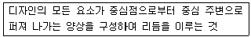
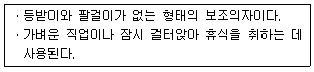
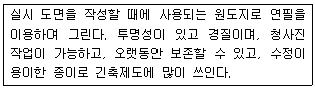
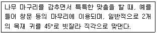
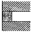

실내건축기능사 (2015-10-10 기출문제)
1과목: 실내디자인
1. 일반적으로 실내 벽면에 부착하는 조명의 통칭적 용어는?
- 브라켓(braeket)
- 펜던트(pendant)
- 캐스케이드(cascade)
- 다운 라이트(down light)
(정답률: 81%)

2. 밖으로 창과 함께 평면이 돌출된 형태로 아늑한 구석 공간을 형성할 수 있는 창의 종류는?
- 고정창
- 윈도우 윌
- 베이 윈도우
- 픽처 윈도우
(정답률: 76%)
3. 부엌가구의 배치 유형 중 양쪽 벽면에 작업대가 마주보도록 배치한 것으로 부엌의 폭이 길이에 비해 넓은 부엌의 형태에 적합한 것은?
- 일자형
- L자형
- 병립형
- 아일랜드형
(정답률: 81%)
4. 조선시대 주택에서 남자 주인이 거처하던 방으로서 서재와 접객공간으로 사용된 공간은?
- 안방
- 대청
- 침방
- 사랑방
(정답률: 89%)
5. 다음 중 실용적 장식품에 속하지 않는 것은?
- 모형
- 벽시계
- 스크린
- 스탠드 램프
(정답률: 86%)
6. 동선계획을 가장 잘 나타낼 수 있는 실내 계획은?
- 천장계획
- 입면계획
- 평면계획
- 구조계획
(정답률: 81%)
7. 우리나라의 전통가구 중 장과 더불어 가장 일반적으로 쓰이던 수납용 가구로 몸통이 2층 또는 3층으로 분리되어 상자 형태로 포개 놓아 사용된 것은?
- 농
- 함
- 궤
- 소반
(정답률: 66%)
8. 상점의 공간구성에 있어서 판매공간에 속하는 것은?
- 파사드공간
- 상품관리공간
- 시설관리공간
- 상품전시공간
(정답률: 80%)
9. 다음 설명에 알맞은 디자인 원리는?

- 강조
- 조화
- 방사
- 통일
(정답률: 85%)
10. 다음과 같은 특징을 갖는 의자는?

- 스툴
- 카우치
- 이지 체어
- 라운지 체어
(정답률: 79%)
11. 다음 중 부엌에서 삼각형(work triangle)의 각 변의 길이의 합계로 가장 알맞은 것은?
- 1.5m
- 2.5m
- 5m
- 7m
(정답률: 68%)
12. 실내 공간을 실제 크기보다 넓어 보이게 하는 방법과 가장 거리가 먼 것은?
- 크기가 작은 가구를 이용한다.
- 큰 가구는 벽에서 떨어뜨려 배치한다.
- 마감은 질감이 거친 것보다는 고운 것을 사용한다.
- 창이나 문 등의 개구부를 크게 하여 시선이 연결되도록 계획한다.
(정답률: 87%)
13. 천창에 관한 설명으로 옳지 않은 것은?
- 통풍, 차열에 유리하다.
- 벽면을 다양하게 활용할 수 있다.
- 실내 조도 분포의 균일화에 유리하다.
- 밀집된 건물에 둘러싸여 있어도 일정량의 채광을 확보할 수 있다.
(정답률: 75%)
14. 주거공간의 동선에 관한 설명으로 옳지 않은 것은?
- 주부 동선을 길수록 좋다.
- 동선은 짧을수록 에너지 소모가 적다.
- 상호 간에 상이한 유형의 동선은 분리하도록 한다.
- 동선을 줄이기 위해 다른 공간의 독립성을 저해해서는 안 된다.
(정답률: 89%)
15. 특정한 사용목적이나 많은 물품을 수납하기 위해 건축화된 가구를 의미하는 것은?
- 가동가구
- 이동가구
- 유닛가구
- 붙박이가구
(정답률: 90%)
16. 다음 중 옥내조명의 설계에서 가장 먼저 이루어져야 하는 것은?
- 광원의 선정
- 조도의 결정
- 조명방식의 결정
- 조명기구의 결정
(정답률: 59%)
17. 음의 대소를 나타내는 감각량을 음의 크기라고 하는데, 음의 크기의 단위는?
- pH
- dB
- sone
- phon
(정답률: 58%)
18. 열기나 유해물질이 실내에 널리 산재되어 있거나 이동되는 경우에 급기로 실내의 전체 공기를 희석하여 배출시키는 방법은?
- 집중환기
- 전체환기
- 국소환기
- 고정환기
(정답률: 71%)
19. 다음 중 열전도율이 가장 큰 것은?
- 동판
- 목재
- 대리석
- 콘크리트
(정답률: 74%)
20. 겨울철 실내에서 발생하는 표면결로의 방지 방법으로 옳지 않은 것은?
- 실내에서 발생하는 수증기를 억제한다.
- 실내온도를 노점온도 이하로 유지시킨다.
- 환기에 의해 실내 절대습도를 저하시킨다.
- 단열강화에 의해 실내측 표면온도를 상승시킨다.
(정답률: 59%)
2과목: 실내환경
21. 점토의 일반적인 성질에 관한 설명으로 옳지 않은 것은?
- 양질의 점토는 습윤 상태에서 현저한 가소성을 나타낸다.
- 일반적으로 점토의 압축강도는 인장강도의 약 5배 정도이다.
- 점토 제품의 색상은 철산화물 또는 석회물질에 의해 나타난다.
- 점토의 비중은 불순 점토일수록 크고, 알루미나 분이 많을수록 적다.
(정답률: 55%)
22. 다음 중 콘크리트용 골재로서 요구되는 성질과 가장 거리가 먼 것은?
- 내화성이 있을 것
- 함수량이 많고 흡습성이 클 것
- 콘크리트강도를 확보하는 강성을 지닐 것
- 콘크리트의 성질에 나쁜 영향을 끼치는 유해물질을 포함하지 않을 것
(정답률: 75%)
23. 재료의 역학적 성질 중 물체에 외력이 작용하면 변형이 생기나 외력을 제거하면 순간적으로 원래의 형태로 회복되는 성질은?
- 전성
- 소성
- 탄성
- 연성
(정답률: 87%)
24. 다음 중 도료의 저장 중에 도료에 발생하는 결함에 속하지 않는 것은?
- 피막
- 증점
- 겔화
- 실끌림
(정답률: 52%)
25. 강화유리에 관한 설명으로 옳지 않은 것은?
- 보통 유리보다 강도가 크다.
- 파괴되면 작은 파편이 되어 분쇄된다.
- 열처리 후에는 절단 등의 가공이 쉬워진다.
- 유리를 가열한 다음 급격히 냉각시켜 제작한 것이다.
(정답률: 75%)
26. 다음 중 역학적 성능이 가장 요구되는 건축재료는?
- 차단재료
- 내화재료
- 마감재료
- 구조재료
(정답률: 65%)
27. 강의 열처리 방법에 속하지 않는 것은?
- 압출
- 불림
- 풀림
- 담금질
(정답률: 61%)
28. 금속의 방식방법에 관한 설명으로 옳지 않은 것은?
- 가능한 한 건조 상태로 유지할 것
- 큰 변형을 주지 않도록 주의할 것
- 상이한 금속은 인접, 접촉시켜 사용하지 말 것
- 부분적으로 녹이 생기면 나중에 함께 제거할 것
(정답률: 82%)
29. 조강포틀랜드 시멘트에 관한 설명으로 옳지 않은 것은?
- 경화에 따른 수화열이 작다.
- 공기 단축을 필요로 하는 공사에 사용된다.
- 초기에 고강도를 발생하게 하는 시멘트이다.
- 보통포틀랜드 시멘트보다 C3S나 석고가 많다.
(정답률: 49%)
30. 다음의 석재 중 내화성이 가장 약한 것은?
- 사암
- 화강암
- 안산암
- 응회암
(정답률: 66%)
3과목: 실내건축재료
31. 석재의 강도라 하면 보통 어떤 강도를 의미하는가?
- 휨강도
- 전단강도
- 압축강도
- 인장강도
(정답률: 65%)
32. 합판에 관한 설명으로 옳지 않은 것은?
- 곡면가공이 가능하다.
- 함수율 변화에 의한 신축변형이 적다.
- 표면가공법으로 흡음효과를 낼 수 있고 외장적 효과도 높일 수 있다.
- 2장 이상의 단판인 박판을 2, 4, 6매 등의 짝수로 섬유방향이 직교하도록 붙여 만든 것이다.
(정답률: 63%)
33. 목재의 부패에 관한 설명으로 옳지 않은 것은?
- 부패 발생시 목재의 내구성이 감소된다.
- 목재의 함수율이 15%일 때 부패균 번식이 가장 왕성하다.
- 생재가 부패균의 작용에 의해 변재부가 청색으로 변하는 것을 청부(靑腐)라고 한다.
- 부패 초기에는 단순히 변색되는 정도이지만 진행되어감에 따라 재질이 현저히 저하된다.
(정답률: 73%)
34. 미장재료 중 자신이 물리적 또는 화학적으로 고체화하여 미장바름의 주체가 되는 재료가 아닌 것은?
- 점토
- 석고
- 소석회
- 규산소다
(정답률: 59%)
35. 내열성이 우수하고, -60 ~ 260℃의 범위에서 안정하며 탄력성, 내수성이 좋아 도료, 접착제 등으로 사용되는 합성수지는?
- 페놀 수지
- 요소 수지
- 실리콘 수지
- 멜라민 수지
(정답률: 60%)
36. 아스팔트의 경도를 표시하는 것으로 규정된 조건에서 규정된 침이 시료 중에 진입된 길이를 환산하여 나타낸 것은?
- 신율
- 침입도
- 인화점
- 인화정
(정답률: 77%)
37. ALC 경량 기포 콘크리트 제품에 관한 설명으로 옳지 않은 것은?
- 흡수성이 낮다.
- 절건비중이 낮다.
- 단열성능이 우수하다.
- 치유성능이 우수하다.
(정답률: 33%)
38. 다음 중 콘크리트의 일반적인 배합설계 순서에서 가장 먼저 이루어져야 하는 사항은?
- 시멘트의 선정
- 요구성능의 설정
- 시험배합의 실시
- 현장배합의 결정
(정답률: 71%)
39. 건축용으로는 글라스 섬유로 강화된 평판 또는 판상제품으로 사용되는 열경화성 수지는?
- 아크릴수지
- 폴리에틸렌수지
- 폴리스티렌수지
- 폴리에스태르수지
(정답률: 44%)
40. 굳지 않은 콘크리트에 요구되는 성질이 아닌 것은?
- 다지기 및 마무리가 용이하여야 한다.
- 시공시 및 그 전후에 재료분리가 적어야 한다.
- 거푸집 구석구석까지 잘 채워질 수 있어야 한다.
- 거푸집에 부어 넣은 후, 클리딩이 많이 발생하여야 한다.
(정답률: 75%)
41. 설계도면의 종류 중 실시설계도에 해당되는 것은?
- 구상도
- 조직도
- 전개도
- 동선도
(정답률: 60%)
42. 철근콘크리트구조에서 적정한 피복두께를 유지해야 하는 이유와 가장 거리가 먼 것은?
- 내화성 유지
- 철근의 부착강도 확보
- 좌굴방지
- 철근의 녹발생 방지
(정답률: 40%)
43. 선의 종류 중 상상선에 사용되는 선은?
- 굵은 실선
- 파선
- 일침쇄선
- 이점쇄선
(정답률: 53%)
44. 곡면판이 지니는 역학적 특성을 응용한 구조로서 외력은 주로 판의 면내력으로 전달되기 때문에 경량이고 내력이 큰 구조물을 구성할 수 있는 구조는?
- 패널구조
- 커믄윌구조
- 블록구조
- 쉘구조
(정답률: 62%)
45. 제도용지에 관한 설명으로 옳지 않은 것은?
- A0 용지의 크기는 약 1m2이다.
- A1 용지로 16장의 A4 용지를 만들 수 있다.
- A1 용지의 규격은 594mm × 841mm이다.
- 도면을 접을 때에는 A4의 크기로 한다.
(정답률: 51%)
46. 철골구조의 고력볼브 접합에 관한 설명으로 옳지 않은 것은?
- 볼트 접합부의 강성이 높아 변형이 적다.
- 볼트의 단위 강도가 낮아 작은 응력을 받는 접합부에 적당하다.
- 피로강도가 높다.
- 너트가 풀리는 경우가 거의 없다.
(정답률: 52%)
47. 평면도는 건물의 바닥면으로부터 보통 몇 m 높이에서 절단하나 수평 부상도인가?
- 0.5 m
- 1.2 m
- 1.8 m
- 2.0 m
(정답률: 60%)
48. 아래 설명에 가장 적합한 종이의 종류는?

- 켄트지
- 방안지
- 트레팔지
- 트레이싱지
(정답률: 71%)
49. 건축제도 시 유의사항으로 옳지 않은 것은?
- 수평선은 왼쪽에서 오른쪽으로 긋는다.
- 삼각자끼리 맞댈 경우 틈이 생기지 않고 면이 곧고 흠이 없어야 한다.
- 선긋기는 시작부터 끝까지 굵기가 일정하게 한다.
- 조명은 우측 상단에 설치하는 것이 좋다.
(정답률: 72%)
50. 아래에서 설명하는 목재접합의 종류?

- 연귀맞춤
- 통맞춤
- 톡아움
- 맞댄쪽매
(정답률: 51%)
4과목: 건축일반
51. 실내부서도 또는 기념건축물과 같은 정적인 건물의 표현에 효과적인 투시도는?
- 평행투시도
- 유각투시도
- 경사투시도
- 조감도
(정답률: 55%)
52. 건축도면 중 전개도에 대한 정의로 옳은 것은?
- 부내시설의 배치를 나타낸 도면
- 각 실 내부의 외장을 명시하기 위해 작성하는 도면
- 지반, 바닥, 처마 등의 높이를 나타낸 도면
- 섭외 배치 및 크기를 나타낸 도면
(정답률: 43%)
53. 프리스트레스트 한크리프 구조의 특징 중 옳지 않은 것은?
- 고강도 재료를 사용하므로 시공이 간편하다.
- 간 사이가 길어 넓은 공간의 설계가 가능하다.
- 부채단면 크기를 작게 할 수 있으나 진동하기 쉽다.
- 공기단축과 시공 과정을 기계화 할 수 있다.
(정답률: 28%)
54. 건축제도 시 치수표기에 관한 설명 중 옳지 않은 것은?
- 협소한 간격이 연속될 때에는 인출선을 사용한다.
- 필요한 치수와 기재가 누락되는 일이 없도록 한다.
- 치수는 특별히 명시하지 않는 한 마무리 치수로 표시한다.
- 치수기입은 치수선 중앙 아랫부문에 기입하는 것이 원칙이다.
(정답률: 73%)
55. 콘크리트 혼화재 중 포졸란을 사용할 경우의 효과에 관한 설명으로 옳지 않은 것은?
- 발열량이 적다.
- 몰리딩이 감소한다.
- 시공인도가 좋아진다.
- 초기 강도 증진이 빨라진다.
(정답률: 33%)
56. 벽돌의 종류 중 특수벽돌에 속하지 않는 것은?
- 붉은벽돌
- 경량벽돌
- 이형벽돌
- 내화벽돌
(정답률: 61%)
57. 다음 치장 줄눈의 이름은?

- 민줄눈
- 평줄눈
- 오늬줄눈
- 맞댄줄눈
(정답률: 39%)
58. 건설공사표준품셈에서 정의하는 기본 벽돌의 크기는? (단, 단위를 mm임)
- 210×100×60
- 190×90×57
- 210×90×57
- 190×100×60
(정답률: 67%)
59. 철골 구조에서 스티프너를 사용하는 가장 중요한 목적은?
- 보의 휨내력 보강
- 웨브 플레이트의 좌굴 방지
- 보-기둥 접합부의 강도 증진
- 플랜지 앵글의 단면 보강
(정답률: 55%)
60. 건축제도에 필요한 제도 용구와 설명이 옳게 연결된 것은?
- T자 - 주로 철재로 만들며, 원형을 그릴 때 사용한다.
- 운형자 - 합판을 많이 사용하며 원호를 그릴 때 주로 사용한다.
- 자유 곡선자 - 원호 이외의 곡선을 자유자재로 그릴 때 사용한다.
- 삼각자 - 플라스틱재료로 많이 만들어, 15°, 50°의 삼각자 두 개를 한쌍으로 많이 사용한다.
(정답률: 62%)